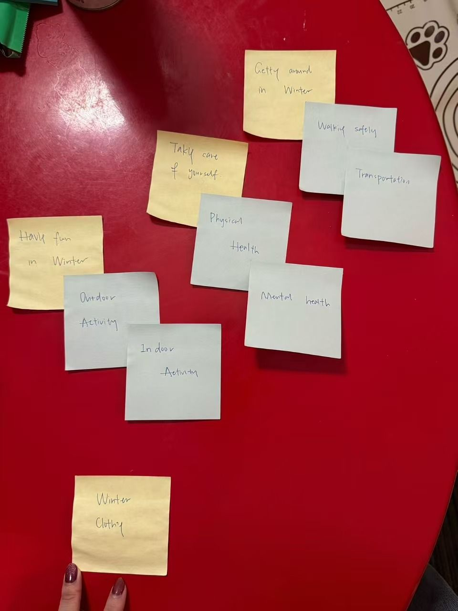

Physical card sorting
I sorted the planned content on physical cards: yellow cards for the main topics and green cards for the subtopics, grouped by what students might look for when preparing for their first winter in Ithaca.

The resulting structure
- Getting Around in WinterWalking safely · Transportation
- Taking Care of YourselfPhysical health · Mental health
- Having Fun in WinterOutdoor activities · Indoor activities
- Winter Clothing
I used this first iteration of the card sort for the website. It lets students find information by need, such as what to wear, how to get around safely, and how to enjoy winter, while the subtopics surface useful information they might not have thought to look for.